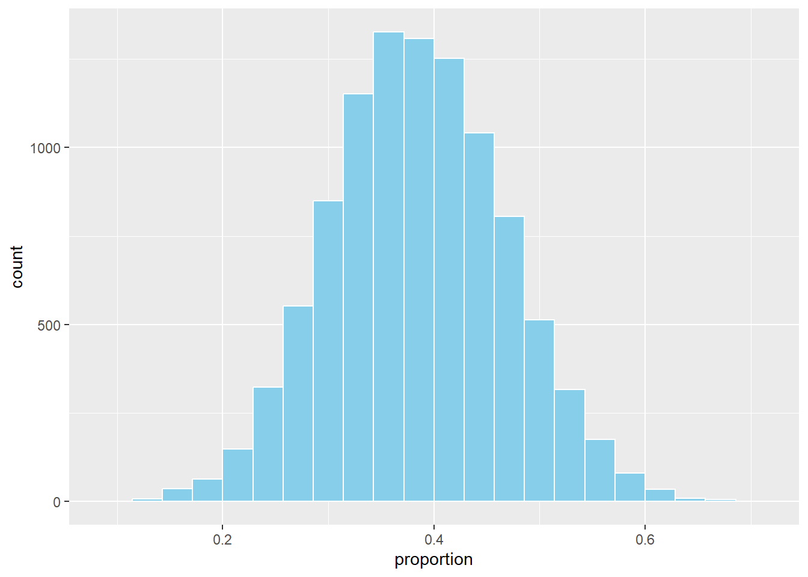
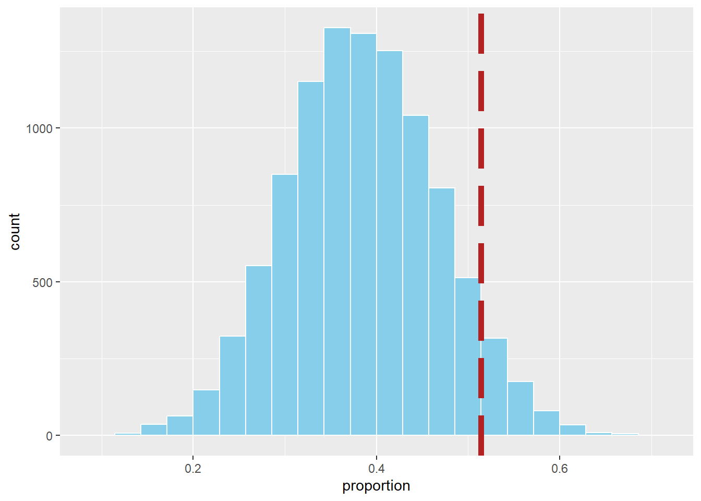
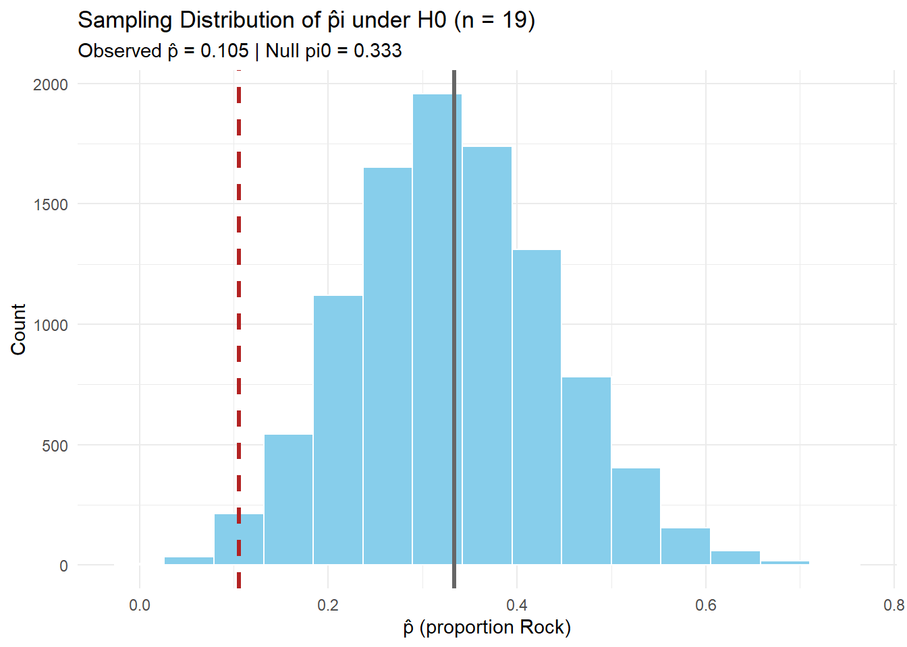

Lesson 11: One Proportion Z-Test
Calendar
Day 1
Day 2


Milestone 3: Let’s Talk
üìÑ General Instructions
Deliverables
- Academic Articles Worksheet
- üìë Use: Academic Articles Worksheet
- ✅ Worth: 10 points
- ⏰ Due: 0700 Friday, 19 Sept 2025
- üîó Submit on Canvas: https://westpoint.instructure.com/courses/10295/assignments/223751
- üìë Use: Academic Articles Worksheet
- Introduction & Data Section
- üìë Use: Math Writing Template
- ✅ Worth: 20 points
- ⏰ Due: 0700 Sunday, 21 Sept 2025
- üîó Submit on Canvas: https://westpoint.instructure.com/courses/10295/assignments/223738
- üìë Use: Math Writing Template
Note
Reminder: Also add both items to your binder with an updated Annex B (not graded yet).
Exploration Exercise 1.5
- ⏰ Due 0700 ET on Lesson 13
- Day 1: Wednesday, 24 Sept 2025
- Day 2: Thursday, 25 Sept 2025
- Day 1: Wednesday, 24 Sept 2025
- üìë Worksheet: https://westpoint.instructure.com/courses/10295/assignments/216497 ‚Äî don‚Äôt sleep on this!
One Proportion Z-Test
Cal


Reese
Little League On-Base Percentage
During my son and his team’s Little League World Series run, Cal got on base \(18\) out of \(35\) times. Across all of Texas East Little Leagues, the average on-base percentage was about \(40\%\).
Question: Is Cal really better than average, or is this just by chance?
Framing the Problem
If the average player gets on base at a \(40\%\) rate, what is the probability that we would observe someone get on base \(18/35 = 0.514\) or higher?
In other words: if Cal were truly a 40% hitter, how often would we see a season this good (or better) just by chance?
Simulating a Season
Let’s pretend we could replay Cal’s season many times under the assumption he is a \(40\%\) hitter.
library(tidyverse)
# simulate one season
one_season <- rbinom(n = 35, size = 1, prob = 0.4)
one_season [1] 0 0 0 0 0 0 0 0 1 1 1 0 1 1 1 0 0 0 1 0 0 1 0 1 0 1 1 0 0 0 1 0 1 0 0# total times on base
on_base_at_bats <- sum(one_season)
on_base_at_bats[1] 13# as a proportion
on_base_at_bats / length(one_season)[1] 0.3714286Many Simulated Seasons
Now let’s repeat this process \(10{,}000\) times.
n <- 10000
sim_results <- tibble(
trial = 1:n,
rocks = rbinom(n, size = 35, prob = 0.4)
) |>
mutate(proportion = rocks / 35)
head(sim_results)# A tibble: 6 × 3
trial rocks proportion
<int> <int> <dbl>
1 1 15 0.429
2 2 15 0.429
3 3 12 0.343
4 4 14 0.4
5 5 15 0.429
6 6 14 0.4 Distribution of Outcomes
Here’s the distribution of on-base proportions from the simulations.
on_base_hist <- sim_results |>
ggplot(aes(x = proportion)) +
geom_histogram(binwidth = 1/35, boundary = 0, fill = "skyblue", color = "white")
on_base_hist
Compare to Observed
Now let’s add Cal’s observed rate (\(0.514\)):
on_base_hist +
geom_vline(xintercept = 0.514, color = "firebrick", linetype = 5, linewidth = 2)
Probability of Being This Good or Better
Finally, what proportion of simulated seasons were at least this extreme?
sim_results |>
summarise(prob_more_extreme = mean(proportion >= 0.514))# A tibble: 1 × 1
prob_more_extreme
<dbl>
1 0.109Conclusion
In our simulation, only about X% of seasons produced an on-base percentage this high or higher if Cal were truly a 40% hitter.
➡️ This suggests his observed \(0.514\) season is possibly to be due to chance alone — the evidence is not convincing that he might might be better than average.
Let’s Formalize This with Tintle’s 6 Steps
Step 1. Ask a Research Question
Is Cal’s on-base percentage higher than the Texas East Little League average of 40%?
Step 2. Design a Study & Collect Data
We have observational data from Cal’s 35 plate appearances during the Little League World Series run.
- \(n = 35\) plate appearances
- \(x = 18\) times on base
- Observed proportion: \(\hat \pi = \tfrac{18}{35} \approx 0.514\)
We treat these 35 at-bats as a random sample from his true underlying ability.
Step 3. Explore the Data
The observed proportion of \(0.514\) is above the reference average of \(0.40\). This is about 11 percentage points higher. The key question is whether this difference is large enough to be unlikely by chance.
Step 4. Draw Inferences Beyond the Data
We set up hypotheses:
- Null hypothesis: \(H_0 : \pi = 0.40\)
- Alternative hypothesis: \(H_A : \pi > 0.40\)
Compute the standard error and test statistic:
\[ SE = \sqrt{\frac{\pi_0(1-\pi_0)}{n}} = \sqrt{\frac{0.40(0.60)}{35}} \approx 0.083 \]
\[ z = \frac{\hat \pi - \pi_0}{SE} = \frac{0.514 - 0.40}{0.083} \approx 1.37 \]
Step 5. Formulate Conclusions
The one-tailed \(p\)-value is:
\[ p = P(Z \geq 1.37) \approx 0.085 \]
1 - pnorm(q = 1.37, mean = 0, sd = 1)[1] 0.08534345At \(\alpha = 0.05\), this result is not statistically significant. We do not have strong enough evidence to conclude Cal’s on-base percentage is truly higher than 40%.
Step 6. Look Back & Ahead
- The observed rate of \(0.514\) is higher than average and suggestive (\(p \approx 0.085\)).
- With only 35 plate appearances, there is considerable variability — a larger sample would provide a clearer answer.
- Context matters: 35 at bats may not represent long-term ability. Future seasons with more data or more at-bats in a season could confirm or refute this pattern.
Let’s Further Define a Few Things
Null Hypothesis
The null hypothesis (\(H_0\)) is the starting assumption — usually that there is “no difference” or “no effect.”
- In our example: \(H_0 : \pi = 0.40\)
- This means we assume Cal’s true on-base probability is the same as the Texas East Little League average of 40%.
Alternative Hypotheses
The alternative hypothesis (\(H_A\)) is what we want to investigate. Depending on the research question, there are three common forms:
- Right-tailed (greater than)
- \(H_A : \pi > 0.40\)
- In context: Is Cal’s true on-base percentage higher than 40%?
- This is the version we are using, because the natural question is whether he’s better than average.
- \(H_A : \pi > 0.40\)
- Left-tailed (less than)
- \(H_A : \pi < 0.40\)
- In context: Is Cal’s true on-base percentage lower than 40%?
- You would ask this if you suspected Cal might actually be worse than average at getting on base.
- \(H_A : \pi < 0.40\)
- Two-tailed (not equal)
- \(H_A : \pi \neq 0.40\)
- In context: Is Cal’s true on-base percentage different from 40% (either higher or lower)?
- You would use this if you want to know whether Cal performs differently than average, without assuming in advance which direction.
- \(H_A : \pi \neq 0.40\)
Choosing the Right Alternative
- If you are asking, “Is Cal better than average?”, the right-tailed test is appropriate.
- If the concern were that Cal struggles at the plate, you’d use a left-tailed test.
- If you only care whether Cal is different from average in either direction, the two-tailed test is the right choice.
The Parameter \(\pi\)
- \(\pi\) (the Greek letter pi) represents the population proportion of average of getting on base.
- In context: \(\pi\) is Cal’s true long-run probability of getting on base each plate appearance.
- We never observe \(\pi\) directly — we estimate it with \(\hat{\pi}\) (the sample proportion).
The Significance Level \(\alpha\)
- \(\alpha\) (alpha) is the threshold for evidence against the null hypothesis.
- Common choices: \(\alpha = 0.05\) (5%) or \(\alpha = 0.01\) (1%).
- Interpretation: If \(p \leq \alpha\), the result is considered statistically significant — unlikely to occur just by chance if \(H_0\) were true.
The \(z\) Distribution
The \(z\) distribution (also called the standard normal distribution) is a bell-shaped curve with:
- Mean = \(0\)
- Standard deviation = \(1\)
So how do we get from our sample proportion \(\hat{\pi}\) to this special distribution?
Step 1. Sampling Distribution of \(\hat{\pi}\)
Under the null hypothesis \(H_0 : \pi = 0.40\), the sample proportion \(\hat{\pi}\) has a sampling distribution that is approximately normal (by the Central Limit Theorem) with:
- Mean = \(\pi_0 = 0.40\)
- Standard deviation = \(SE = \sqrt{\frac{\pi_0(1-\pi_0)}{n}}\)
This tells us what values of \(\hat{\pi}\) we would expect just by chance if the null were true.
Step 2. Standardizing
To compare our observed \(\hat{\pi}\) to this distribution, we standardize it:
- Subtract the mean under \(H_0\)
- This centers the distribution at \(0\) by measuring how far away our observed statistic is from the null.
- \((\hat{\pi} - \pi_0)\)
- This centers the distribution at \(0\) by measuring how far away our observed statistic is from the null.
- Divide by the standard deviation
- This rescales differences into standard deviation units, so we can judge how unusual they are.
- \(\dfrac{\hat{\pi} - \pi_0}{SE}\)
- This rescales differences into standard deviation units, so we can judge how unusual they are.
Step 3. The Resulting \(z\)
After centering and rescaling, the new standardized statistic follows (approximately) the standard normal distribution, \(N(0,1)\).
That’s why we call it the \(z\) statistic:
\[ z = \frac{\hat{\pi} - \pi_0}{SE} \]
Now we can use the \(z\) distribution to calculate probabilities (like \(p\)-values) for how extreme our observed result is relative to the null hypothesis.
ggplot() +
geom_function(fun = dnorm, xlim = c(-4,4))Classroom Example: Rock–Paper–Scissors
Class Activity: With your eyes closed, on the count of three, everyone will make their first throw of Rock–Paper–Scissors.
- üëä = Rock
- ✋ = Paper
- ✌️ = Scissors
Hold your choice steady so we can tally the results. Closing your eyes helps reduce herding or copying from neighbors.
Step 1. Ask a Research Question
Do students tend to choose Rock more or less often than random chance (\(33\%\)) on their first throw?
Step 2. Design a Study & Collect Data
With eyes closed, on the count of 3 each student chooses one option (Rock/Paper/Scissors) as if starting a game. We then tally the class counts:
- \(R\) = number of Rock
- \(P\) = number of Paper
- \(S\) = number of Scissors
- \(n = R+P+S\)
# Enter the tallies you just collected:
R <- 2 # Rock count
P <- 10 # Paper count
S <- 7 # Scissors count
n <- R + P + S
c(R = R, P = P, S = S, n = n) R P S n
2 10 7 19 Step 3. Explore the Data
Compute the sample proportion choosing Rock and make a quick bar chart. Under complete randomness we’d expect each to be near \(n/3\).
pihat <- R / n
pihat[1] 0.1052632df <- tibble(option = c("Rock","Paper","Scissors"),
count = c(R, P, S))
ggplot(df, aes(option, count)) +
geom_col() +
geom_hline(yintercept = n/3, linetype = 2) +
labs(title = "Class First-Throw Choices",
subtitle = "Dashed line = expected count if choices were uniform (n/3)",
x = NULL, y = "Count")Step 4. Draw Inferences Beyond the Data
We’ll do two things:
- Simulate many samples of size \(n\) assuming \(p_{Rock}=1/3\), and estimate a two-sided \(p\)-value by comparing simulated proportions to the observed.
- Do the math version using the \(z\)-distribution.
Simulate \(n\) under \(H_0 : \pi = 1/3\)
pi0 <- 1/3
N <- 10000 # number of simulations
R_obs <- R # keep observed Rock consistent with Step 2
pihat_obs <- R_obs / n
# Simulate many samples under H0
sim_results <- tibble(
trial = 1:N,
rocks = rbinom(N, size = n, prob = pi0) # Rock counts in each simulated sample
) |>
mutate(pihat = rocks / n) # simulated sample proportions
sim_results# A tibble: 10,000 × 3
trial rocks pihat
<int> <int> <dbl>
1 1 9 0.474
2 2 6 0.316
3 3 7 0.368
4 4 7 0.368
5 5 9 0.474
6 6 6 0.316
7 7 6 0.316
8 8 10 0.526
9 9 7 0.368
10 10 5 0.263
# ℹ 9,990 more rows# Plot the simulated sampling distribution with observed and null marked
sim_results |>
ggplot(aes(x = pihat)) +
geom_histogram(binwidth = 1/n, fill = "skyblue", color = "white") +
geom_vline(xintercept = pihat_obs, color = "firebrick", linetype = 2, linewidth = 1.2) +
geom_vline(xintercept = pi0, color = "gray40", linewidth = 1.2) +
labs(title = paste0("Sampling Distribution of p̂i under H0 (n = ", n, ")"),
subtitle = paste0("Observed p̂ = ", round(pihat_obs,3),
" | Null pi0 = ", round(pi0,3)),
x = "p̂ (proportion Rock)",
y = "Count") +
theme_minimal()
# Two-sided simulation p-value
obs_abs_diff <- abs(pihat_obs - pi0)
sim_p_two_sided <- sim_results |>
mutate(pihat_different_than_null = pihat - pi0) |> # difference from null
mutate(abs_of_difference = abs(pihat_different_than_null)) |>
mutate(is_extreme = abs_of_difference >= obs_abs_diff) |> # flag extremes
summarise(p_val = mean(is_extreme)) # proportion of extremes = p-value
sim_p_two_sided# A tibble: 1 × 1
p_val
<dbl>
1 0.0453Two-Sided Test (math/analytic via \(z\))
- \(H_0: p_{Rock} = 1/3\)
- \(H_A: p_{Rock} \neq 1/3\)
\(SE = \sqrt{\frac{\pi_0(1-\pi_0)}{n}}\)
# Standard Error under H0
SE <- sqrt(pi0 * (1 - pi0) / n)
SE[1] 0.1081476\[ z = \frac{\hat{\pi} - \pi_0}{SE} \]
# Test Statistic (z)
z_stat <- (pihat_obs - pi0) / SE
z_stat[1] -2.108878\[ p = 2 \times P(Z \geq |z|) \]
# Two-Sided p-value
p_val_two_sided <- 2 * (1 - pnorm(abs(z_stat)))
p_val_two_sided[1] 0.03495507Step 5. Formulate Conclusions
Now we bring the two approaches together:
- Simulation gave us an empirical \(p\)-value by resampling under \(H_0\).
- Math/analytic (\(z\)-test) gave us an approximate \(p\)-value using the standard normal.
n R_obs pihat_obs pi0 z_stat
19.0000 2.0000 0.1050 0.3330 -2.1090
sim_p_two_sided z_p_two_sided alpha
0.0453 0.0350 0.0500 Simulation-based decision: Reject H0 (evidence of ≠ 1/3) Z-approximation decision: Reject H0 (evidence of ≠ 1/3) Interpretation:
With \(n\) throws and observed \(\hat p\), the simulation \(p\)-value tells us how unusual the result is if \(p=1/3\) were true. The \(z\) test gives a similar answer using a theoretical normal curve. At \(\alpha = 0.05\), compare both to decide whether to reject \(H_0\).
Step 6. Look Back & Ahead
Code
library(shiny)
library(ggplot2)
library(dplyr)
library(tibble)
ui <- fluidPage(
titlePanel("One-Proportion Test: z-formulas + Live Simulation"),
withMathJax(),
tags$hr(),
fluidRow(
column(
width = 4,
h4("Inputs"),
numericInput("x", "Observed successes (x)", value = 2, min = 0, step = 1),
numericInput("n", "Sample size (n)", value = 19, min = 1, step = 1),
sliderInput("pi0", HTML("π<sub>0</sub> (null proportion)"), min = 0, max = 1,
value = 1/3, step = 0.01),
numericInput("B", "Simulations (B)", value = 10000, min = 100, step = 100),
numericInput("seed", "Random seed", value = 26, min = 1, step = 1),
helpText("Tip: This defaults to the R/P/S example: x = 2 (Rock), n = 19, π0 = 1/3.")
),
column(
width = 8,
h4("Formulas"),
# Show the formulas via MathJax
div(style = "font-size: 1.15em; margin-bottom: 8px;",
"$$ SE = \\sqrt{\\frac{\\pi_0(1 - \\pi_0)}{n}}, \\qquad z = \\frac{\\hat{p} - \\pi_0}{SE} $$"
),
h4("Computed Values"),
tableOutput("value_table"),
tags$br(),
h4("Sampling Distribution under H0 (Simulated)"),
plotOutput("hist_plot", height = "330px"),
helpText("Histogram shows simulated \\(\\hat p\\) under H0. Red line = observed \\(\\hat p\\). Gray line = \\(\\pi_0\\).")
)
)
)
server <- function(input, output, session) {
# Basic reactives
phat <- reactive({
req(input$n > 0)
input$x / input$n
})
SE <- reactive({
sqrt(input$pi0 * (1 - input$pi0) / input$n)
})
z_stat <- reactive({
(phat() - input$pi0) / SE()
})
# p-values for three alternatives
p_right <- reactive({ 1 - pnorm(z_stat()) }) # H_A: p > pi0
p_left <- reactive({ pnorm(z_stat()) }) # H_A: p < pi0
p_two <- reactive({ 2 * (1 - pnorm(abs(z_stat()))) }) # H_A: p != pi0
# Simulation under H0
sim_df <- reactive({
req(input$B >= 100)
set.seed(input$seed)
rocks <- rbinom(input$B, size = input$n, prob = input$pi0)
tibble(
phat = rocks / input$n
)
})
# Output: table of computed values
output$value_table <- renderTable({
tibble::tibble(
`x (successes)` = input$x,
`n (trials)` = input$n,
`π0 (null)` = round(input$pi0, 4),
`p̂ = x/n` = round(phat(), 4),
`SE` = round(SE(), 5),
`z` = round(z_stat(), 4),
`p (right)` = signif(p_right(), 4),
`p (left)` = signif(p_left(), 4),
`p (two-sided)` = signif(p_two(), 4)
)
}, striped = TRUE, bordered = TRUE, spacing = "s", digits = 6)
# Output: histogram with vertical lines at phat and pi0
output$hist_plot <- renderPlot({
df <- sim_df()
ggplot(df, aes(x = phat)) +
geom_histogram(binwidth = 1 / input$n, color = "white") +
geom_vline(xintercept = phat(), color = "firebrick", linetype = 2, linewidth = 1.2) +
geom_vline(xintercept = input$pi0, color = "gray40", linewidth = 1.2) +
labs(
x = expression(hat(p) ~ "(proportion)"),
y = "Count",
title = paste0("Simulated Sampling Distribution of ", expression(hat(p)), " under H0"),
subtitle = paste0("n = ", input$n, ", π0 = ", round(input$pi0, 3),
", observed p̂ = ", round(phat(), 3),
"; B = ", input$B)
) +
theme_minimal(base_size = 12) +
xlim(c(0,1))
})
}
shinyApp(ui, server)Reference Table: \(z\)-Tests for One Proportion
For all cases:
\[ SE = \sqrt{\frac{\pi_0(1 - \pi_0)}{n}}, \quad z = \frac{\hat{p} - \pi_0}{SE} \]
| Alternative Hypothesis | Formula for \(p\)-value | R Code |
|---|---|---|
| \(H_A: p > \pi_0\) | \(p = 1 - \Phi(z)\) | p_val <- 1 - pnorm(z_stat) |
| \(H_A: p < \pi_0\) | \(p = \Phi(z)\) | p_val <- pnorm(z_stat) |
| \(H_A: p \neq \pi_0\) | \(p = 2 \cdot (1 - \Phi(|z|))\) | p_val <- 2 * (1 - pnorm(abs(z_stat))) |
Where:
- \(\hat{p} = R/n\) (sample proportion)
- \(\pi_0\) = hypothesized proportion under \(H_0\)
- \(\Phi(\cdot)\) = cumulative distribution function (CDF) of the standard normal distribution.
Board Problem
A hospital claims that 85% of discharge summaries are finalized within 24 hours.
In an audit of 60 summaries, 46 were finalized within 24 hours.
Research Question: Is the true proportion finalized within 24 hours less than 85%?
- State the hypotheses.
- Explain (in words) how you would simulate this test (do not actually simulate).
- Then, perform the mathematical one-proportion \(z\) test.
Solution
Step 1. Ask a Research Question
Do fewer than 85% of discharge summaries get finalized within 24 hours?
Step 2. State Hypotheses
- \(H_0 : \pi = 0.85\)
- \(H_A : \pi < 0.85\)
Step 3. Collect and Summarize the Data
- \(n = 60\) summaries
- \(x = 46\) finalized within 24h
- \(\hat{\pi} = \tfrac{x}{n} = \tfrac{46}{60} = 0.767\)
Step 4. Draw Inferences
Simulation (conceptual only)
- Under \(H_0\), simulate many samples of size \(n=60\) with \(\pi_0=0.85\).
- For each, compute \(\hat{\pi}_{sim}\).
- Estimate the left-tailed \(p\)-value as the fraction of simulations with \(\hat{\pi}_{sim} \le \hat{\pi}_{obs} = 0.767\).
Mathematical Approach (z-test)
Standard error under \(H_0\):
\[ SE = \sqrt{\frac{\pi_0 (1-\pi_0)}{n}} = \sqrt{\frac{0.85 \cdot 0.15}{60}} \approx 0.046 \]
Test statistic:
\[ z = \frac{\hat{\pi} - \pi_0}{SE} = \frac{0.767 - 0.85}{0.046} \approx -1.80 \]
\(p\)-value (left-tailed):
\[ p = \Phi(z) = \Phi(-1.80) \approx 0.036 \]
pnorm(-1.8)[1] 0.03593032Step 5. Make a Decision
At \(\alpha = 0.05\), since \(p \approx 0.036 < 0.05\), we reject \(H_0\).
Step 6. State a Conclusion in Context
There is statistical evidence that fewer than 85% of discharge summaries are completed within 24 hours.
Before you leave
Today:
- Any questions for me?
Upcoming Graded Events
- Project Milestone 3: Due Canvas 22 Sept
- Exploration Exercise 1.5: Due at 0700 on Lesson 13
- 24 September 2025 for Day 1
- 25 September 2025 for Day 2)
- WPR 2: Lesson 22